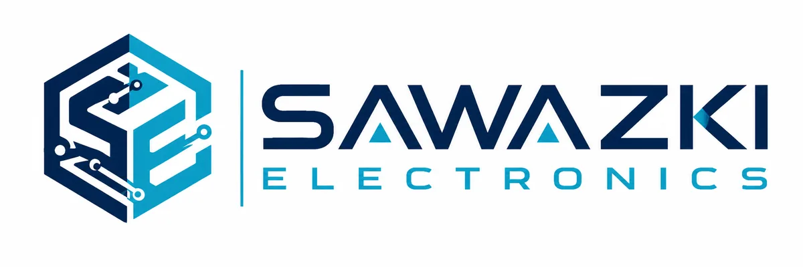

Laptop & PC Service
Fehleranalyse, Leistungsprobleme, Komponentenprüfung, Systempflege und sinnvolle Upgrade-Empfehlungen.

IT, PC & Laptop · Service & Support
Ob langsamer Laptop, streikender PC oder ein neues Gerät: Hier erhalten Sie eine verständliche Diagnose, saubere Arbeit und ehrliche Empfehlungen – persönlich, ohne Fachchinesisch und ohne Warteschleife.
Leistungen
Vom langsamen Laptop bis zur neuen Arbeitsplatz-Einrichtung: die Unterstützung ist praxisnah, nachvollziehbar und auf dauerhafte Nutzung ausgelegt.
Fehleranalyse, Leistungsprobleme, Komponentenprüfung, Systempflege und sinnvolle Upgrade-Empfehlungen.
Virenschutz, Updates, sichere Konten, Passwort-Hygiene und verständliche Absicherung für Alltag und Arbeit.
Datensicherung, Wiederherstellungsstrategie, Cloud-Abgleich und geordnete Übergabe wichtiger Dateien.
WLAN, Drucker, Router, Peripherie und Arbeitsplatzgeräte so einrichten, dass sie zuverlässig zusammenspielen.
Windows, Programme, Konten, E-Mail, Browser, Sicherheitsoptionen und Datenübernahme sauber startklar machen.
Klare Einschätzung, verständliche Prioritäten und Hilfe bei Entscheidungen rund um Hardware, Software und Abläufe.
Fünf Leistungen gibt es zusätzlich als ausführliche Angebotsseiten:
Schneller zum richtigen Angebot
Wähle den Einstieg, der am ehesten passt. Wenn etwas dazwischen liegt, ist der Anfrage-Assistent der schnellste Weg: kurz beschreiben, ich sortiere den Rest.
Anfrage-Assistent startenWarum Sawazki Electronics
Technik-Hilfe ist Vertrauenssache. Deshalb gibt es hier kurze Wege, klare Sprache und Empfehlungen, die zu Ihrem Alltag und Ihrem Budget passen.
Sie sprechen direkt mit dem, der an Ihrem Gerät arbeitet – in Freudenstadt, ohne Callcenter und Warteschleife.
Diagnose, Lösung und nächste Schritte werden so erklärt, dass Sie sie wirklich nachvollziehen können – Erklären gehört hier zum Beruf.
Reparieren, aufrüsten oder besser neu? Sie erhalten die Einschätzung, die sich für Sie lohnt – auch wenn sie kleiner ausfällt als erwartet.
Diagnose statt Rätselraten
Gute IT-Hilfe beginnt mit einer ruhigen Analyse: Was ist kaputt, was ist nur falsch eingestellt, was lohnt sich wirklich und welche Lösung passt zum Budget?

Service in der Praxis
Reparatur, Beratung und Einrichtung gehören zusammen: erst zuhören, dann sauber prüfen und am Ende so erklären, dass die Lösung wirklich nutzbar ist.

Ablauf
Sie beschreiben Problem, Gerät und Ziel. Je genauer die Ausgangslage, desto schneller die Einschätzung.
Die Ursache wird eingegrenzt, mögliche Risiken werden benannt und sinnvolle Wege werden verglichen.
Die vereinbarte Lösung wird strukturiert umgesetzt, getestet und bei Bedarf mit Ihnen abgestimmt.
Sie erhalten eine verständliche Zusammenfassung, damit das System danach sicher weiterläuft.
Ob Privatgerät, Homeoffice-Platz oder kleiner Firmenarbeitsplatz: Ziel ist nicht nur eine schnelle Reparatur, sondern ein Setup, das im Alltag ruhig und zuverlässig funktioniert.
Kontakt
Ihre Anfrage wird über das Formular an die hinterlegte E-Mail-Adresse weitergeleitet. Alternativ können Sie auch direkt per E-Mail oder Telefon Kontakt aufnehmen.
Digitale Lernangebote, Software-Entwicklung, IT-Engineering – Designed by Sawazki Electronics.